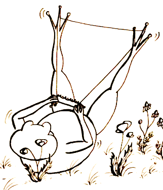
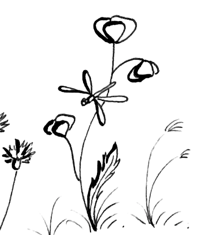
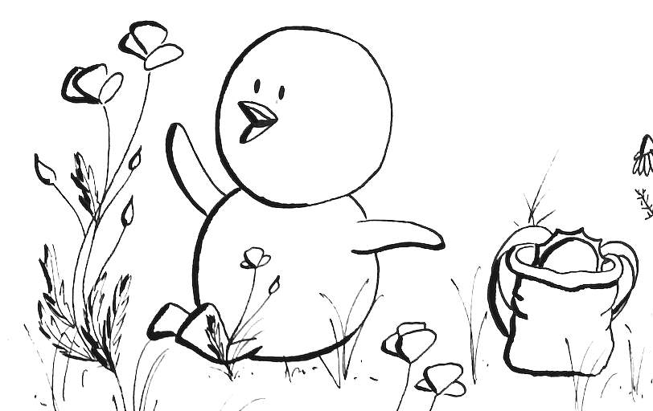

Es war einmal am Bodensee... ein kleines, kuscheliges Entennest. Darin schlummerten sechs hellgrüne Eierchen.
|  |  |  |
Das echte Abenteuer begann jedoch, als Fips im Kindergarten Birk kennenlernte...
|
|
Möchtest du mehr über Birk erfahren? Dann folge seinen Spuren! |